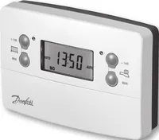
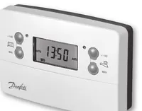
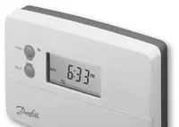
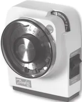
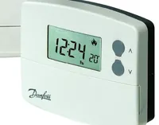
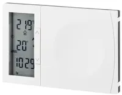
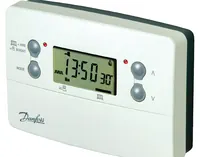

 |
View Danfoss FP715 Si user manualDanfoss FP715 Si user manual PDF |
View Danfoss FP715 Si installation manualDanfoss FP715 Si installation manual PDF |
Danfoss FP715 Si |
2-channel programmer (CH + HW) |
|
|
|
View Danfoss FP715 user manualDanfoss FP715 user manual PDF |
View Danfoss FP715 installation manualDanfoss FP715 installation manual PDF |
Danfoss FP715 |
2-channel full programmer |
|
|
 |
View Danfoss CP715 Si user manualDanfoss CP715 Si user manual PDF |
View Danfoss CP715 Si installation manualDanfoss CP715 Si installation manual PDF |
Danfoss CP715 Si |
2-channel common-timebase programmer |
|
|
 |
View Danfoss TS715 Si user manualDanfoss TS715 Si user manual PDF |
View Danfoss TS715 Si installation manualDanfoss TS715 Si installation manual PDF |
Danfoss TS715 Si |
Single-channel timeswitch |
|
|
|
View Danfoss SET2E user manualDanfoss SET2E user manual PDF |
View Danfoss SET2E installation manualDanfoss SET2E installation manual PDF |
Danfoss SET2E |
Electronic 24h mini-programmer |
|
|
|
View Danfoss SET3E user manualDanfoss SET3E user manual PDF |
View Danfoss SET3E installation manualDanfoss SET3E installation manual PDF |
Danfoss SET3E |
Electronic 24h programmer (separate CH/HW) |
|
|
 |
View Danfoss Randall 102 user manualDanfoss Randall 102 user manual PDF |
View Danfoss Randall 102 installation manualDanfoss Randall 102 installation manual PDF |
Danfoss Randall 102 |
Electro-mechanical mini-programmer |
|
|
|
View Danfoss Randall 103 user manualDanfoss Randall 103 user manual PDF |
View Danfoss Randall 103 installation manualDanfoss Randall 103 installation manual PDF |
Danfoss Randall 103 |
Electro-mechanical 24h timeswitch |
|
|
 |
View Danfoss TP5000 Si user manualDanfoss TP5000 Si user manual PDF |
View Danfoss TP5000 Si installation manualDanfoss TP5000 Si installation manual PDF |
Danfoss TP5000 Si |
5/2-day programmable room stat |
|
|
 |
View Danfoss TP7000 user manualDanfoss TP7000 user manual PDF |
View Danfoss TP7000 installation manualDanfoss TP7000 installation manual PDF |
Danfoss TP7000 |
7-day programmable room stat (datasheet) |
|
|
 |
View Danfoss TP9000 Si user manualDanfoss TP9000 Si user manual PDF |
View Danfoss TP9000 Si installation manualDanfoss TP9000 Si installation manual PDF |
Danfoss TP9000 Si |
Programmable room stat + DHW timer |
|
|